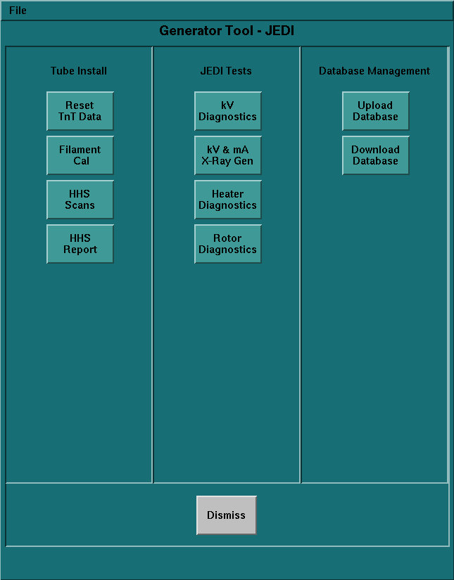
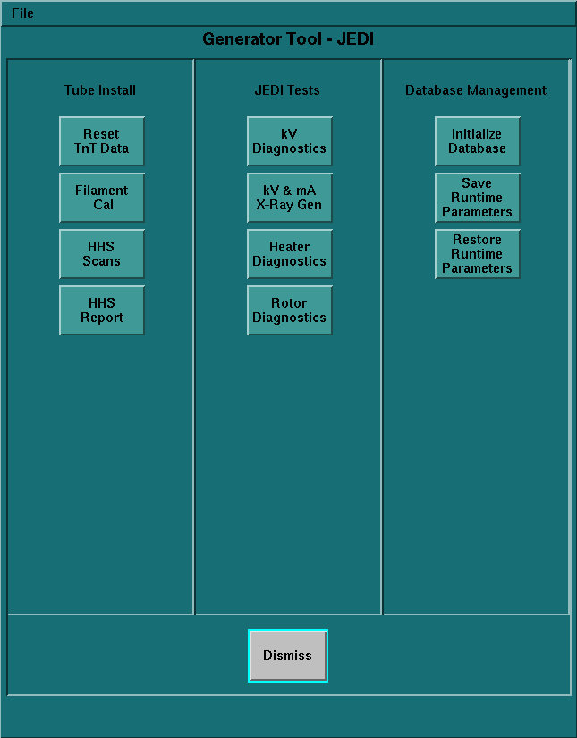
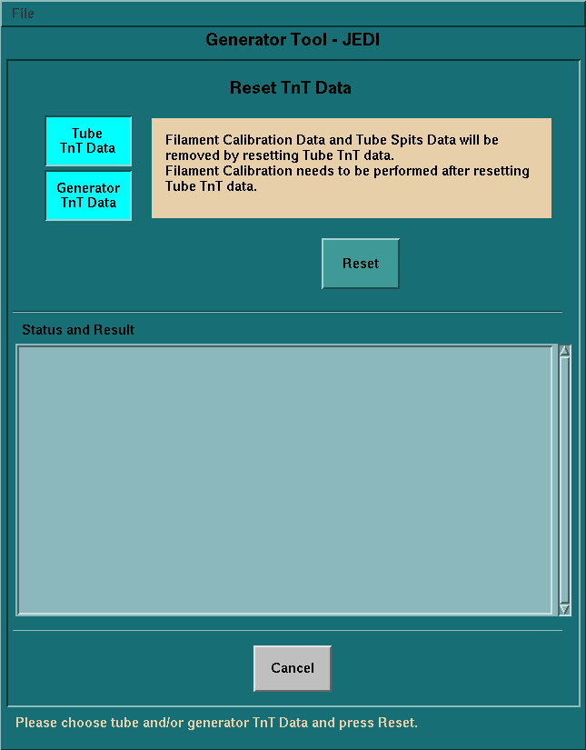
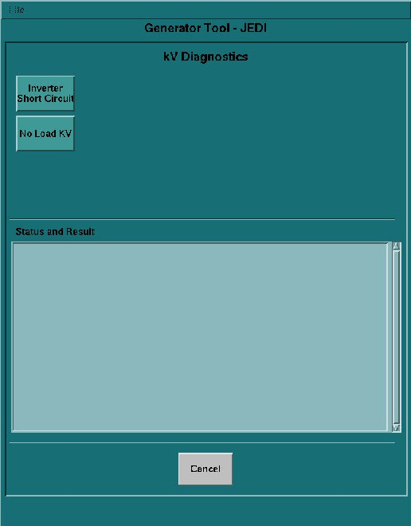
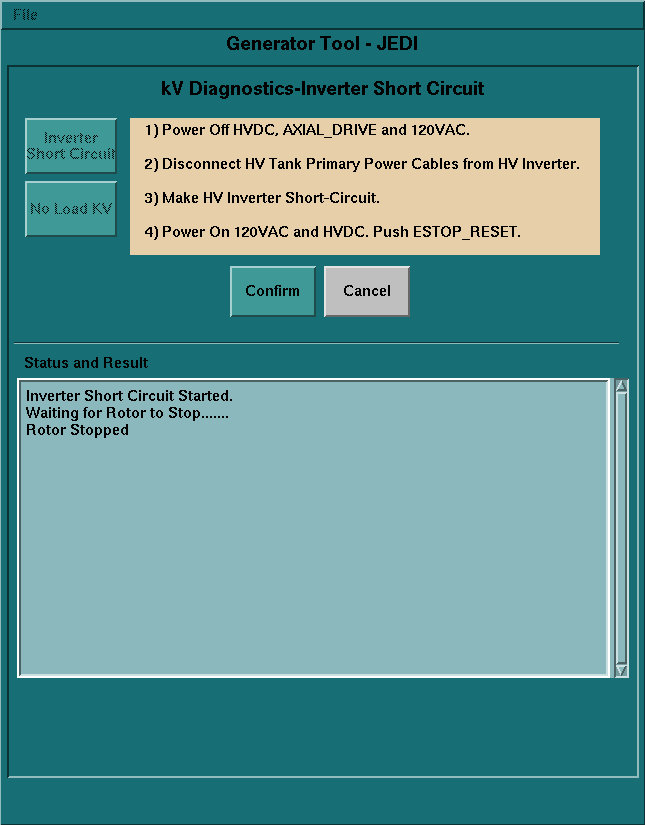
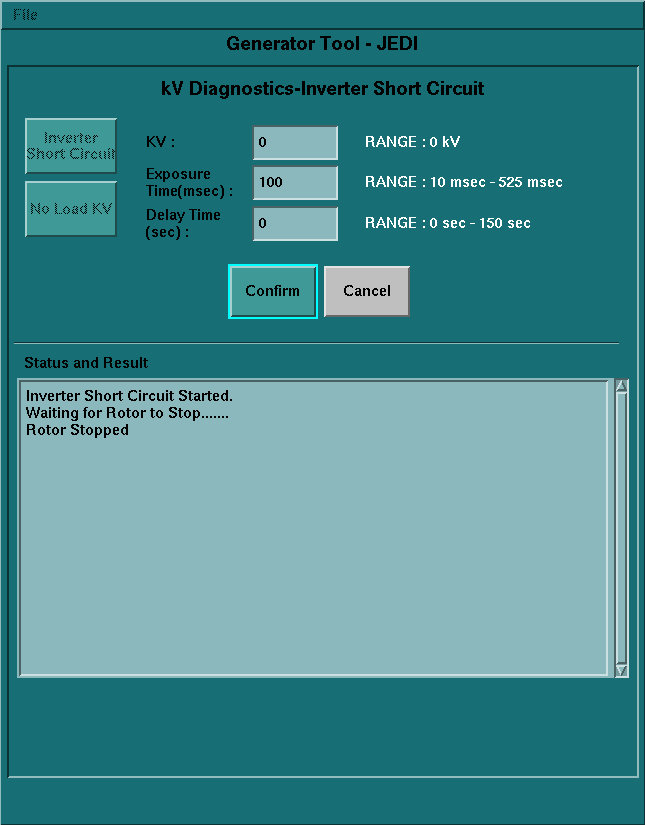
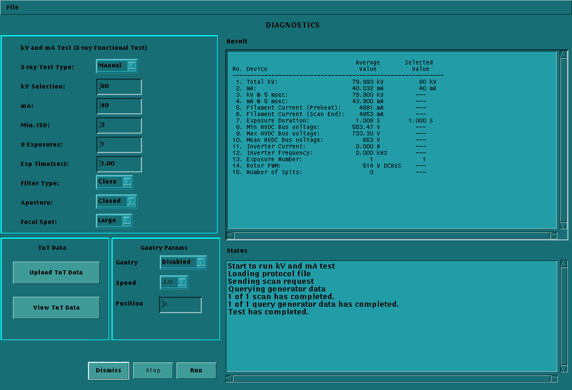

GEMS Proprietary Class: C
Direction 5117807-800, Rev# A
GEMS Proprietary Class: C |
| Last Revised: | June 2004 |
The JEDI Generator Tool is launched from the Common Service Desktop by clicking [CALIBRATION] > [GENERATOR CHARACTERIZATION]. This tool contains many key service features for the X-Ray Generation subsystem.
Illustration 1: JEDI Generator Tool (M3 Version)

Illustration 2: JEDI Generator Tool (M4 Version)

This tool can be thought of as the "portal" to many of the important X-Ray generation features. The tools launched from within Generator Tool - JEDI will consist of 3 main areas: the Message area, Status and Result screen, and Instruction area (see Illustration 3).
Use this tool to reset the Tracking and Trending data stored in the JEDI Generator. This tool can reset either the Tube or the Generator TnT data. To initiate the selected operation, press [Reset].
Illustration 3: Reset TnT Data Tool

In Illustration 3, note the Message Area at the top (tan), the Status and Result Screen in the middle (light green) and the Instruction Area at the bottom (dark green).
The Filament Calibration tool is used to calibrate the JEDI Generator based on the X-Ray Tube. It is part of the Generator Characterization procedure. Pressing [Scan] begins the calibration process. If this program hangs, it does not overwrite the current calibration parameters stored in the JEDI database. The same holds true if the user cancels the process.
This tool performs a pre-determined scan sequence and displays the results in the Status and Result screen. Both the small and large filaments to must pass for the system to scan properly.
In order for Filament Calibration to run properly, the system must be able to scan. As such, the parameters stored in the JEDI generator database must be close to calibrated. Loading the "default database" will always provide a baseline.
Use the HHS Scans tool to qualify that the system has properly calibrated the generator subsystem. In many places, law requires this when a high voltage component has been replaced. See the installation manual for more detail on HHS compliance / Data Verification.
The program, when run, launches a scan sequence and takes measurements throughout the sequence to verify that the system is working within specifications.
| NOTE: | For systems with certain system software versions, you will encounter
the following problem with Jedi Tests: After exiting the kV Diagnostics menu (after executing the diagnostics or clicking [Cancel]), and when you have entered the Heater Diagnostics or Rotor Diagnostics menu, boxes showing the diagnostics procedure and a Start button will not be displayed. When this happens, exit the Generator Tool and re-enter it. You can then normally execute the Heater Diagnostics or Rotor Diagnostics. This means that when you want to execute the Heater or Rotor Diagnostics, first execute it after entering the Generator Tool. |
Clicking on the kV Diagnostics button will launch a separate screen with three diagnostic tools that are available for troubleshooting the X-Ray Generation subsystem. In order to run these tools, hardware interaction is required.
Illustration 4: kV Diagnostics (Example - actual may vary slightly)

Each tool provides instructions for setting up the test as shown in Illustration 5. Each test asks for confirmation that the necessary steps have been performed. Following that, each tool accepts entry of setup parameters (defaults will be given) before performing the test (see Illustration 6).
Illustration 5: Example of test with instructions

Illustration 6: Example of test and parameters

This tool can be used to scan in a diagnostic-type setting. It allows for collecting High Voltage statistics during a single x-ray exposure. Virtually all possible single exposure scan types at the system level are allowed. Illustration 7 provides a sample screen shot.
The kV & mA (X-Ray) tool can also upload (to a file on the console) or view the TnT data. You must upload the data before you view it. The upload feature overwrites any previous data stored in the file.
Illustration 7: kV & mA (X-Ray) tool

Table 1: kV & mA (X-Ray) Tool Diagnostic Measurements
| Measurement | Explanation |
| *Total kV: | Scan kV |
| *mA: | Measured mA during scan |
| *kV @ 5 msec: | Measured kV around the 5 ms (approx. 4-6 sec) point in the scan |
| *mA @ 5 msec: | Measured mA around the 5 ms (approx. 4-6 sec) point in the scan |
| Filament Current (Preheat): | Measured filament current during preheat phase |
| Filament Current (Scan End): | Measured filament current at the end of the scan |
| Exposure Duration | Measured exposure duration |
| Min HVDC Bus Voltage | Minimum HVDC Bus Voltage measured during exposure |
| Max HVDC Bus Voltage | Maximum HVDC Bus Voltage measured during exposure |
| *Mean HVDC Bus Voltage | Mean of all HVDC measured values |
| *Inverter Current | Measured inverter current |
| *Inverter Frequency | Measured inverter frequency |
| Exposure Number | Exposure number that just finished (will display statistics if user cancels) |
| Rotor PWM | Recorded Voltage necessary to drive Anode Rotation |
| Number of Spits | Total count of tube spits during exposure |
The Heater Diagnostic tool runs a sequence that drives the tube filaments. If an error occurs, the diagnostic notifies of the error. If this occurs, check the system error log.
The Rotor Diagnostic tool runs a sequence that rotates the anode. If an error occurs, the diagnostic notifies of the error. If this occurs, check the system error log.
The database management tools allow for uploading and / or downloading the following data within the database found on the PPC kV control board.
Tube TnT
Generator TnT
Event Log
[Initialize Database] downloads the default data above to the control board.
[Save Runtime Parameters] uploads the data to a file on the console.
[Restore Runtime Parameters] downloads the saved data (by Save Runtime Parameters) to the control board. If Save Runtime Parameters has not ever been used, the button is shown dimmed.
To download all the default database (including other data than mentioned above) to the JEDI generator, use the Flash Download Tool.